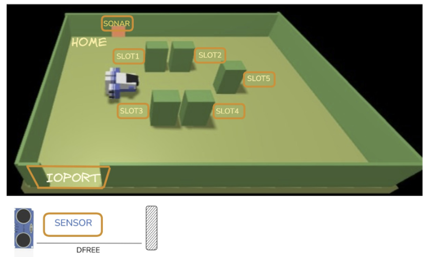

GOAL: - Progettare ed implementare la logica principale del sistema - Sviluppare i componenti cargoservice e cargorobot e le loro logiche

In the picture above: • The slots1-4 depict the hold areas reserved to store one container each, • The slot5 depicts an area, where the cargorobot must temporarily store a container, before to place it in one of the slots1-4. During temporary storage, a 'marker' device labels the container with an identification barcode and signals when this marking activity is completed. The company asks us to build service named cargoservice that should work as follows. The cargoservice is able to receive a request to load a container sent by some customer by using the pushbutton of the IOPort. • It sends the answer retrylater, if the IOPort is currently occupied by a container or if the system is Out of service • It rejects the request when the hold is already full, i.e. the slots1-4 are already occupied. • Otherwise, it considers the system as engaged, detects a free slot and returns as answer the name of such a reserved slot. While engaged, the system must blink a Led. When the request to load is accepted, the customer must move the container in the sensor area within prefixed amount of time (e.g. 30 secs), otherwise the systems becomes disengaged. Then, the cargoservice uses the cargorobot to move the container from the IOPort to the slot5 (for marking the container) and then to the reserved slot. The service must also show on the display on the IOPort: • the current state of the hold • the message 'Service working', when it is all is going well • the message 'Out of service' if the sonar sensor measures a distance D > DFREE for at least 3 secs (perhaps a failure of the sonar).
Nello Sprint0 sono stati indivituati e sviluppati i componenti software POJO del sistema essenziali per i servizi cargoservice e cargorobot. • cargoservice Si occupa della logica di business relativa alle richieste di movimentazione e allocazione dei container. Il componente dovrà comunicare con le seguenti entità: - webgui-ioport - cargorobot - sonar • cargorobot Realizza le operazioni relative al DDR. Per l'esecuzione dei movimenti, utilizza come servizio esterno il software RobotSmart26. Il componente dovrà comunicare con le seguenti entità: - cargoservice
Di seguito vengono elencati i messaggi utilizzati dai due servizi per interagire con i soggetti sopra menzionati. • cargoservice <---> webgui-ioportRequest requestToLoad : requestToLoad(NOARGS) Reply loadAnswer: loadAnswer(ANSWER) for requestToLoad Dispatch messageDisplay : messageDisplay(MESSAGE)Ricevuta una richiesta di carico, cargoservice - controlla che il sistema sia funzionante - controlla che il sistema sia disengaged - controlla che non sia già presente un container nella "sensor area" - verifica la presenza di almeno uno slot libero > se libero, riserva lo slot > altrimenti, rifiuta la richiesta - avvia un timer di 30 secondi entro i quali dovrà essere spostato il container nella "sensor area" • cargoservice <---> cargorobot (robotsmart26)Request moverobot : moverobot(TARGETX, TARGETY, STEPTIME) Reply moverobotdone : moverobotdone(ARG) for moverobot Reply moverobotfailed: moverobotfailed(PLANDONE, PLANTODO) for moverobotcargoservice funga da mente per i movimenti del cargorobot, la logica segue questi step: - recupera il container dalla IO-PORT - sposta il container presso lo slot5 dove il marker impiegherà 5 secondi ad etichettarlo - sposta il container presso lo slot riservato • cargoservice <---> sonarEvent sonarData : distance(D) Event sonarAlarm : sonaralarm(REASON) Dispatch updateLed : updateLed(STATE) // STATE = off | onLe misurazioni del sonar sono impattanti in due scenari: - cargoservice controlla se presente un container nella "sensor area" - cargoservice riceve una distanta maggiore di DFREE per più di 3 secondi
Alessandro Quaranta - alessandro.quaranta@studio.unibo.it
Gaia Verzelli - gaia.verzelli@studio.unibo.it
Project GitHub repository:
https://github.com/bbnogaia/cargo-robot-2026
Student GitHub repository:
https://github.com/alequaranta/iss2026quaranta